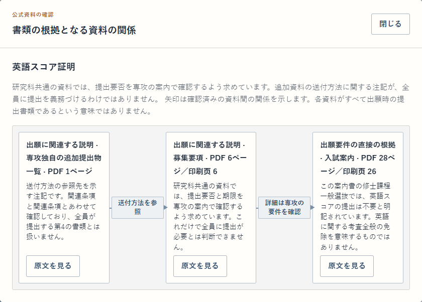

東京科学大学
情報工学系 · 2027 年 4 月入学 · B 日程
日程・提出書類・試験情報を確認してから、準備状況との照合へ。
本デモは上記の一つの対象に限定。製品の全対象を再現するものではありません。
ログイン・インストール不要
必要な書類を知る。自分の準備と照らす。
気になる条件は、公式資料までたどる。
留学支援の現場から生まれた、資料確認・検索システムの作品デモです。実装済みの四つのステップを、保存されたサンプルで体験できます。
日本語・中国語を切り替えられます。実際の製品画面を再利用しています。

「なぜ必要？」を、複数の資料から確認。図の関係はレビュー済み。自動推測した関係ではありません。
THE EXPERIENCE
画面を眺めるだけでなく、一連の操作を試せます。
学校・専攻・資料の対象を確認します。
日程、提出書類、試験情報を読みます。
用意された準備状況を切り替えます。
確認事項と参考レポートを開きます。
TWO SCHOOLS · FIVE SCENARIOS
情報工学系 · 2027 年 4 月入学 · B 日程
日程・提出書類・試験情報を確認してから、準備状況との照合へ。
本デモは上記の一つの対象に限定。製品の全対象を再現するものではありません。
新領域創成科学研究科 · 複雑理工学専攻
五つの提出書類のテーマと、共通要項・専攻案内・追加提出物のつながり。
2027 年度修士・一般選抜 A 日程・4 月入学の固定資料。完全な提出書類一覧や出願資格判定ではありません。
キーワード検索と BGE-M3 による意味検索を組み合わせる設計。
条件の照合と自然言語の参考回答を分け、文書・ページ・適用範囲を保持。
このデモも既存の画面と検証結果を再利用。モデルや索引を新たに構築していません。
サンプルはテスト用の入力で、実在の学生の個人情報ではありません。入力欄は例の選択に置き換えています。選択や準備メモはブラウザ内で処理し、製品 API や生成 AI に送信しません。GitHub Pages の配信に伴うアクセス情報はホスティング提供者の取扱いに従います。
公式 PDF 全体、モデル、知識庫、ベクトル索引は本サイトに含めません。原文の抜粋と公式サイトへの外部リンクを表示します。公式サイトの現在の資料がデモの固定版と一致するとは限りません。
質問・回答は過去のオンラインテストから選んだ保存例の日本語訳です。全体の正答率や現在の性能を示すものではありません。採用担当者向けの機能体験であり、現在の出願判断には使用しないでください。